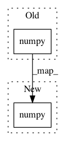

ad81daba89248f8fee30beff0a78b7625f188cc6,torchnet/meter/classerrormeter.py,ClassErrorMeter,add,#ClassErrorMeter#,18
Before Change
if torch.is_tensor(output):
output = output.cpu().squeeze().numpy()
if torch.is_tensor(target):
target = target.cpu().squeeze().numpy()
elif isinstance(target, numbers.Number):
target = np.asarray([target])
if np.ndim(output) == 1:
output = output[np.newaxis]
After Change
if torch.is_tensor(output):
output = output.cpu().squeeze().numpy()
if torch.is_tensor(target):
target = np.atleast_1d(target.cpu().squeeze().numpy())
elif isinstance(target, numbers.Number):
target = np.asarray([target])
if np.ndim(output) == 1:
In pattern: SUPERPATTERN
Frequency: 1
Non-data size: 2
Instances
Project Name: pytorch/tnt
Commit Name: ad81daba89248f8fee30beff0a78b7625f188cc6
Time: 2018-07-25
Author: changmaocheng@163.com
File Name: torchnet/meter/classerrormeter.py
Class Name: ClassErrorMeter
Method Name: add